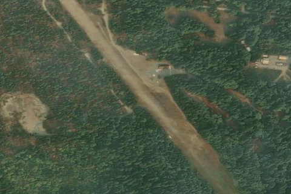

STEHEKIN STATE
6S9 · WA

Aerial imagery source: Esri, Vantor, Earthstar Geographics, and the GIS User Community
| Identifier | 6S9 |
|---|---|
| State | WA |
| Runway length | 2,630 ft |
| Runway width | 100 ft |
| Surface | TURF |
| Runway | 13/31 |
| Elevation | 1,230 ft |
| Ownership | public |
| CTAF | 122.9 |
| Coordinates | 48.34577777, -120.72080555 |
Notes
[shortfield] Stehekin State Airport sits just west of the village of Stehekin at the head of Lake Chelan, offering access to some of Washington's most spectacular scenery. Surveys consistently rank it among the most interesting airports in the state, and it draws a steady crowd of campers, anglers, and hunters. The village provides food, lodging, and resort amenities, and pack trips into the heart of the Cascades can be arranged nearby. The landscape is breathtaking — but that same magnificent terrain makes Stehekin one of the most challenging airports in Washington. This is strictly a strip for experienced mountain pilots. The field is remote, and it shows. Conditions are primitive, maintenance is infrequent, and the 2,630-foot turf runway is extremely rough with frost-heaved rocks scattered throughout. Both approaches are demanding: a large mountain rises directly off the east end, tall trees crowd both thresholds, the runway slopes significantly uphill to the west, and the valley narrows quickly in that direction. Strong, gusty winds are the norm. Although field elevation is only 1,230 feet, density altitude will be a factor on any summer afternoon — plan accordingly. Lightweight aircraft with solid short-field performance can generally operate throughout the day; heavier aircraft should plan to depart in the early morning. Animals wander onto the runway with some regularity, and people and vehicles are not uncommon either. Always overfly the field before landing to assess conditions and plan your approach. Most pilots disregard wind direction unless winds are strong, choosing instead to land uphill to the west. Be aware that even a modest tailwind makes it difficult to get down quickly after clearing the trees on the east threshold, and a long landing is likely. Departures are typically to the east to take advantage of the descending terrain, with aircraft drifting gently toward the valley center after clearing the treetops. Early morning arrivals and departures are strongly recommended, when winds are calm and temperatures are at their coolest. The airport is generally open from June 1st through October 1st.